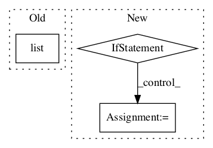

bcf6d0a188ee9ba868c1de01c347f813e3aaa35c,stellargraph/core/graph_networkx.py,NetworkXStellarGraph,nodes_of_type,#NetworkXStellarGraph#Any#,497

Before Change
// TODO: unit test!
if node_type is None:
return list(self)
else:
return [
n
for n, ndata in self._graph.nodes(data=True)
After Change
A list of node IDs with type node_type
// TODO: unit test!
if node_type in self._node_index_maps:
return list(
n for n in self._node_index_maps[node_type].keys() if n is not None
)
else:
return [n for n in self.nodes() if self.node_type(n) == node_type]
def node_type(self, node):
Get the type of the node
In pattern: SUPERPATTERN
Frequency: 3
Non-data size: 3
Instances
Project Name: stellargraph/stellargraph
Commit Name: bcf6d0a188ee9ba868c1de01c347f813e3aaa35c
Time:
Author: null
File Name: stellargraph/core/graph_networkx.py
Class Name: NetworkXStellarGraph
Method Name: nodes_of_type
Project Name: stellargraph/stellargraph
Commit Name: bcf6d0a188ee9ba868c1de01c347f813e3aaa35c
Time:
Author: null
File Name: stellargraph/mapper/full_batch_generators.py
Class Name: FullBatchNodeGenerator
Method Name: __init__
Project Name: deepmipt/DeepPavlov
Commit Name: d305759b714cddfa66d214f4dceffe26679e2c02
Time:
Author: null
File Name: deeppavlov/models/squad/squad.py
Class Name: SquadModel
Method Name: train_on_batch